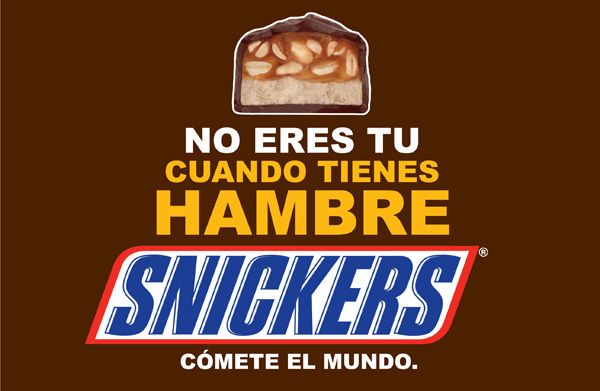

Cancionero |
||
|
 
|
Corazón sin Cara
Y ya me contaron Que te acomplejas de tu imagen Y mira el espejo Que linda eres sin maquillaje Y si eres gorda o flaca Todo eso no me importa a mí Y tampoco soy perfecto Solo sé que yo te quiero así Y el corazón no tiene cara Y te prometo que lo nuestro nunca va a terminar Y el amor vive en el alma Ni con un deseo sabes que nada de ti va a cambiar No soy capaz de tomarlo, este corazón Prende una vela, rézale a Dios Y dale gracias que tenemos ese lindo corazón Prende una vela, pide perdón Y por creer que tú eres fea te dedico esta canción Si eres gorda o flaca Todo eso no me importa a mí Y tampoco soy perfecto Solo sé que yo te quiero así Y si eres gorda o flaca Todo eso no me importa a mí Tampoco soy perfecto Solo sé que yo te quiero así Y el corazón no tiene cara Y te prometo que lo nuestro nunca va a terminar Y el amor vive en el alma Ni con un deseo, sabes que nada de ti irá a cambiar Nadie es perfecto en el amor Ay seas blanquita o morenita, no me importa el color Mírame a mí, mírame bien Aunque tenga cara de bonito Me acomplejo yo también Y si eres gorda o flaca Todo eso no me importa a mí Y tampoco soy perfecto Solo sé que yo te quiero así Sentimiento Come on Y el corazón (y el corazón) no tiene cara (No, no, no) Y te prometo que lo nuestro nunca va a terminar Y el amor (y el amor) vive en el alma Ni con un deseo sabes que nada de ti va a cambiar ahh
| |